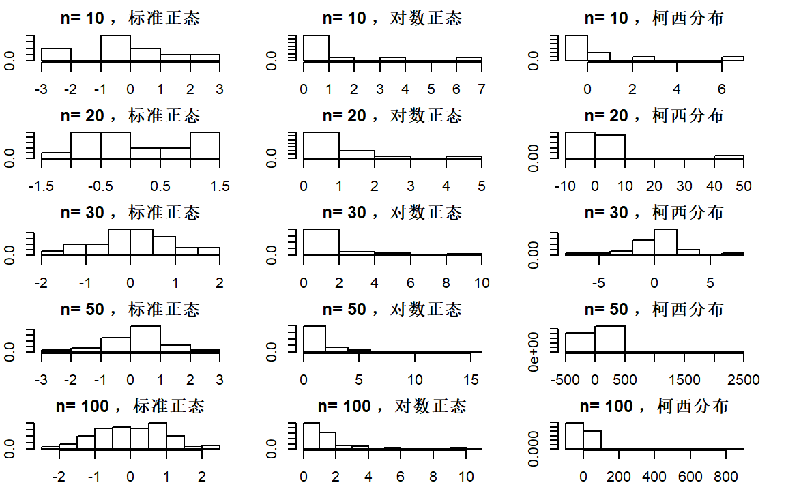
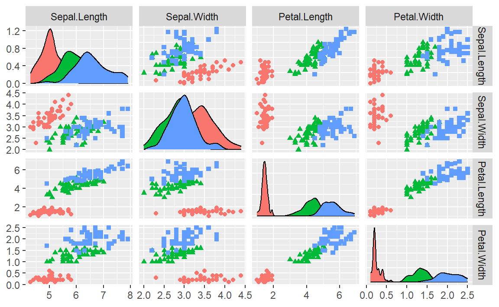

3 统计图形
library(tidyverse)
library(GGally)
#> Registered S3 method overwritten by 'GGally':
#> method from
#> +.gg ggplot2
set.seed(1024)3.1 习题
习题1
解：
opar <- par(no.readonly = TRUE)
par(mfrow=c(5,3))
par(mar=rep(2,4)) #第一种
n=c(10, 20, 30, 50, 100)
for(i in seq_along(n))
{
hist(rnorm(n[[i]]),freq = FALSE,main = paste("n=",n[[i]],"，标准正态"))
hist(exp(rnorm(n[[i]])),freq = FALSE,main = paste("n=",n[[i]],"，对数正态"))
hist(rcauchy(n[[i]]),freq = FALSE,main = paste("n=",n[[i]],"，柯西分布"))
}
par(opar)
习题2
解：
iris %>%
ggpairs(aes(color=Species,shape=Species),
columns = 1:4,
upper = list(continuous = "points"))